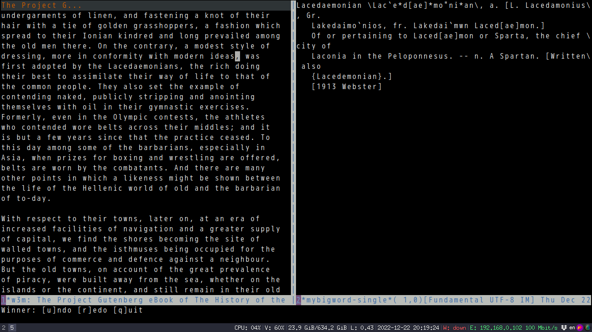

醋溜土豆丝
食材: 土豆两个、大蒜(可选)、干辣椒、白醋、盐、糖(可选)、青红椒(可选)各一个.
- 将土豆削干净去皮切成丝切好的土豆丝放盆里泡着，以防接触空气氧化发黑. 青红椒成丝备用
- 冲洗一下土豆丝了，把土豆本身的淀粉含量洗掉，这样炒出来的土豆丝才不会相连，而且更脆.
- 土豆丝焯水至半透明,取出凉水冲洗
- 锅中倒油，把干辣椒和拍打好的蒜放入爆香，再加土豆丝和青椒丝,陈醋(3或4勺),少许酱油翻炒几下
- 放入盐糖葱花翻炒几下出锅.
醋溜土豆丝
食材: 土豆两个、大蒜(可选)、干辣椒、白醋、盐、糖(可选)、青红椒(可选)各一个.
- 将土豆去皮切成丝放盆里泡着，以防接触空气氧化发黑. 青红椒成丝备用
- 冲洗一下土豆丝了，把土豆本身的淀粉含量洗掉，这样炒出来的土豆丝才不会相连，而且更脆.
- 土豆丝焯水至半透明,取出凉水冲洗
- 锅中倒油，把干辣椒和拍打好的蒜放入爆香，再加土豆丝和青椒丝,陈醋(3或4勺),少许酱油翻炒几下
- 放入盐糖葱花翻炒几下出锅.
土耳其炖韭葱(Zeytinyağlı Pırasa)
用一般的锅就可.只要一开始小火炖就不会焦.
- 韭葱保留葱白,刮去外皮,只留芯子,视频中约7根韭葱
- 斜切韭葱段,浸入盐水(两勺盐)去苦味,15-30分钟都可以
- 3根胡萝卜斜切片,韭葱冲洗干净
- 加1.5杯橄榄油(多点无妨),放入胡萝卜和韭葱小火加盖炖5-10分钟(出汁且沸腾)
- 少量米洗净(米太多吸水, 菜就可能干掉了),洒在蔬菜表面,加入1.5杯水(水太少也可能底部菜会焦掉),一勺盐一勺糖加水拌匀加入,一个柠檬榨汁加入.
- 15分钟小火加盖至饭熟,关火冷却30分钟或更长时间.最后撒入mixed herb.
小结, 胡萝卜和韭葱是主料,胡萝卜可以附加洋葱和少量番茄.
梅菜肉末炒四季豆
- 肉末里一点盐一点糖胡椒粉一点生抽一点生粉一点水,搅拌均匀
- 梅菜洗干净去水切小段
- 酱料,一点糖一点盐一点蚝油,加点水搅拌均匀
- 要分三步炒
- 第一步,白锅中火梅菜炒干后,一点糖一点老抽一点油,再炒出香味
- 第二步,放油大火炒四季豆2分钟, 加一点水继续炒(容易熟,不干),炒2分钟,共4分钟
- 第三步,放油中火煎肉末,半分钟后翻面,放蒜末. 两边都半分钟后大火肉末捣碎加辣椒葱白炒香
- 四季豆放入翻炒放花雕酒翻炒
- 加入酱料翻炒后锅盖盖上1分钟,洒上葱花关火上盘
Use Emacs to read English classic books efficiently
Classic books is difficult to read because they have many new words.
Find the word's dictionary definition is tedios and breaks the flow.
I tried reading those books in iPad and Kindle. The experience is not very smooth because,
- It takes too much effort to select the word and send it to the dictionary. Particularly difficulty for me because I've got big fingers
- The dictionary popup overlaps with the book's content. Feels not comfortable
In Emacs,
- new words can be automatically highlighted
- The book's content and dictionary are displayed side by side
The Emacs plugin mybigword 0.2.4 provides a new command mybigword-big-words-in-current-windows which automatically highlight the new words in current window with hint. Type the hint, the word's definition is displayed in another window.
Screenshot before running M-x mybigword-big-words-in-current-windows,

After,

The hint UI is actually based on avy.
Every English word can be measure by word frequency named Zipf Scale (see http://crr.ugent.be/papers/van_Heuven_et_al_SUBTLEX-UK.pdf for more details).
Any word with ZipF less than the value of mybigword-upper-limit is regarded as new word.
In my setup, mybigword-upper-limit is 3.6.
Code faster by extending Emacs EVIL text object
I use EVIL text object a lot. For example, press vi( to select the code snippet inside parenthesis.
I could also press vib to do exactly same thing as vi( because below code in EVIL's evil-maps.el,
(define-key evil-outer-text-objects-map "b" 'evil-a-paren)
(define-key evil-inner-text-objects-map "b" 'evil-inner-paren)
As a full stack web developer, I often need select the snippet inside "[]", "{}", "()", "<>". So I prefer using vig to replace vi[, vi{, vi(, and vi<.
Here is my new text object,
(defun my-evil-paren-range (count beg end type inclusive)
"Get minimum range of paren text object.
COUNT, BEG, END, TYPE is used. If INCLUSIVE is t, the text object is inclusive."
(let* ((parens '("()" "[]" "{}" "<>"))
range
found-range)
(dolist (p parens)
(condition-case nil
(setq range (evil-select-paren (aref p 0) (aref p 1) beg end type count inclusive))
(error nil))
(when range
(cond
(found-range
(when (< (- (nth 1 range) (nth 0 range))
(- (nth 1 found-range) (nth 0 found-range)))
(setf (nth 0 found-range) (nth 0 range))
(setf (nth 1 found-range) (nth 1 range))))
(t
(setq found-range range)))))
found-range))
(evil-define-text-object my-evil-a-paren (count &optional beg end type)
"Select a paren."
:extend-selection t
(my-evil-paren-range count beg end type t))
(evil-define-text-object my-evil-inner-paren (count &optional beg end type)
"Select 'inner' paren."
:extend-selection nil
(my-evil-paren-range count beg end type nil))
(define-key evil-inner-text-objects-map "g" #'my-evil-inner-paren)
(define-key evil-outer-text-objects-map "g" #'my-evil-a-paren)
In above code,
-
my-evil-paren-rangereturns the minimum range of text objects "[", "{", "(", and "<". - EVIL api
evil-define-text-objectis used to define a text object whose range is returned bymy-evil-paren-range - In
evil-outer-text-objects-mapthe text object shortcut "g" is defined
As you can see, understanding my personal workflow and knowing a bit Lisp does make me code faster.
萝卜丝饼
- 半个白萝卜刮丝, 15秒沸水烫一下过冷水去萝卜生味.略挤干萝卜丝水分
- 一小把粉丝焯水1分钟切碎
- 一红辣椒或1/4红色大辣椒(主要是增色,辣味可选)切碎
- 泡好的干虾仁切小颗粒
- 萝卜丝打散,放入粉丝红辣椒虾仁,1小勺生姜泥,1/2小勺五香粉,1/2小勺白胡椒粉,最后葱花放在上面
- 油2大勺烧至冒烟泼在葱花上(激发其香味)
- 蚝油1.5小勺,香油1/2小勺,1/4小勺盐搅拌
发面煎饼略.
小结,
- 我以中东面饼代替中国煎饼